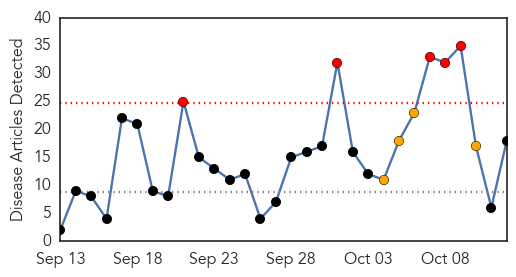

Unknown
30-Day Web Trend
0 alerts, 0 warnings

30-Day Twitter Trend
1 alerts, 0 warnings

Article Locations

Article Confidences

Top Articles:
- 0.999
- South Korean man cleared of Mers tests positive again, Asia News & Top Stories
- 0.994
- Discharged MERS patient re-diagnosed with the virus
- 0.990
- Colorado child polio-like cases being investigated
- 0.956
- Hand, foot and mouth disease hits Savannah Primary
- 0.949
- 8-year-old boy dies of rare, vaccine-derived poliovirus in Laos
- 0.946
- Circulating vaccine-derived poliovirus – Lao People’s Democratic Republic
- 0.929
- Norovirus Outbreak in Reno Area Schools Sickens Over 700
- 0.917
- Chicago Tribune
- 0.917
- Chicago Tribune
- 0.917
- Chicago Tribune
- 0.917
- Chicago Tribune
- 0.917
- Chicago Tribune
- 0.917
- Chicago Tribune
- 0.917
- Chicago Tribune
- 0.917
- Chicago Tribune
- 0.911
- High dose flu shot decreases hospitalizations for nursing home residents
- 0.899
- As world seeks to eradicate polio, Laos suffers vaccine-linked case
- 0.889
- Counterterrorism policies and practices: health and values at stake
- 0.839
- Staff Deaths at Leading Hospital Put India’s TB Battle in Spotlight
- 0.821
- Staff deaths at leading hospital put India's TB battle in spotlight
- 0.819
- Flu vaccine clinics begin around the area
- 0.818
- Staff deaths at leading hospital put India's TB battle in spotlight
- 0.814
- Woman dies of rabies; bat bite blamed for fatality
- 0.805
- Staff deaths at a Mumbai hospital put India’s TB battle in spotlight
- 0.768
- Staff deaths at leading hospital put India's TB battle in spotlight, news, Health News, AsiaOne YourHealth
- 0.757
- 2,184 HIV/Aids cases registered with Pims
- 0.746
- Olive Leaf Remove For Herpes
- 0.732
- Staff Deaths At Leading Hospital Put India's Tuberculosis Battle In Spotlight
- 0.707
- Washington Post reporter Rezaian ‘convicted’ in Tehran
- 0.707
- Six arrested over manhandling of Air France executives
- 0.705
- Snap vote to go ahead despite attacks, Turkish PM says
- 0.705
- Two Tunisian soldiers killed in clashes with jihadists near Algerian border
- 0.705
- Belarus re-elects 'last dictator in Europe' for fifth term
- 0.703
- Iraq probes claims IS group chief Baghdadi wounded in air strikes
- 0.702
- Erdogan under fire after Turkey suffers worst bombing ever
- 0.702
- ‘Knife terror will not defeat us,’ Netanyahu says of Jerusalem stabbings
- 0.694
- Unvaccinated Children In Ukraine At Heightened Risk Of Polio
- 0.693
- Two Madagascans sentenced to life for French couple's murder
- 0.693
- Syrian opposition rejects UN peace talks over Russian offensive
- 0.693
- French PM Valls in Saudi Arabia to sign ‘significant’ armaments deal
- 0.685
- Kazakh dissident tycoon to appeal French extradition order
- 0.685
- Guinea opposition rejects presidential vote, calls for protests
- 0.685
- Pro-EU campaigners launch ‘Britain Stronger in Europe’ drive
- 0.685
- Algeria shuts TV station after airing interview with former Islamist insurgent
- 0.673
- Staff deaths at hospital put TB battle in spotlight
- 0.655
- OUR OPINION: Chickenpox case sets right precedent for infectious outbreaks
- 0.651
- Toddlers in Maine Sickened by Same Strain of E. coli
- 0.648
- CDC Reports Additional Illnesses and DeathNewsInferno
- 0.630
- 6 children die from rabies
- 0.608
- Our View: Chickenpox case sets precedent for Maine outbreaks
Showing top 50 articles...
Top Tweets:
- 0.879
- RT: Flu Attack! How A Virus Invades Your Body http://t.co/DdC8b4qiLF flu virus health
Influenza
30-Day Web Trend
5 alerts, 4 warnings

30-Day Twitter Trend
0 alerts, 0 warnings

Article Locations

Article Confidences

Top Articles:
- 0.997
- Flu vaccines coming this month
- 0.992
- Last Season's Flu Vax: Not Entirely Worthless
- 0.976
- Professor David Salisbury says all children should be vaccinated against flu
- 0.976
- Don't give flu shot a miss this season based on last year's failure, doctors say
- 0.973
- Last Season's Flu Vax: Not Entirely Useless
- 0.966
- Flu shots in higher dose can reduce hospitalization cases among nursing home patients, study finds
- 0.933
- Flu Vaccine Now Available At County Health Departments Statewide
- 0.843
- Today's stories from newspapers in Parry Sound
- 0.826
- Here's something you should read before you get your flu shots
- 0.783
- Higher Flu Shot Dose Decreases Hospitalization Of Elderly
- 0.751
- October 12, 2015 Archives
- 0.751
- October 12, 2015 Archives
- 0.751
- October 12, 2015 Archives
- 0.751
- October 12, 2015 Archives
- 0.688
- High dose influenza shots more effective in older people
- 0.684
- High dose influenza shots more effective in older people
- 0.678
- High dose influenza shots more effective in older people
- 0.623
- High Dose Influenza Shots More Effective In Older People
Top Tweets:
-
No tweets found for Oct 12, 2015